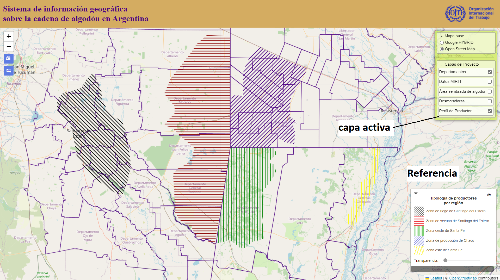

Descripción de las capas de información y uso de la herramienta
Descripción de las capas de información
Se presentan estructuradas en el panel principal (extremo supérior derecho de la página).
Se agrupan en dos segmentos: Los mapas base, que brindan información del terreno, localidades y rutas. Por su parte,
el segundo segmento de capas corresponde a información de la cadena de producción de algodón y sus diferentes etapas: Departamentos: Corresponde a los limites de cada departamento para las 3 provincias en estudio, Datos MIRTI: Se corresponde con la información arrojada por el modelo de riesgo de trabajo infantil y adolescente, para cada departamento, Área sembrada de algodón: Presenta el área promedio de producción de algodón, por departamento,
de los últimos 5 años, Desmotadoras: Está muestra la ubicación del parque de desmotadoras en las 3 provincias de estudio, Perfil del productor: Se muestra las principales zonas de producción de algódon, junto a las tipologías de
productores presentes, Tamaño de las EAPs: Expresa la superficie promedio de las explotaciones agropecuarias por departamento.
Visualización de las capas: opacidad, leyenda e impresión del mapa
Al activar cada capa, se añade al mapa las referencias correspondientes. Por ejemplo: En la siguiente imagen, con la capa de
perfil de productores activada, se añadió en el margen inferior izquierdo automáticamente las referencias para cada trama dibujada en el mapa. Asu vez
dentro de la misma leyenda, se puede ocultar la capa clic en el ojo o modificar su transparencia.

Al generar una visualización con las capas de interés es posible imprimirlas o guardarla como pdf. Para eso, se debe hacer
clic en el botón de impresión y realizar las configuraciones deseadas, como muestra la siguiente figura.